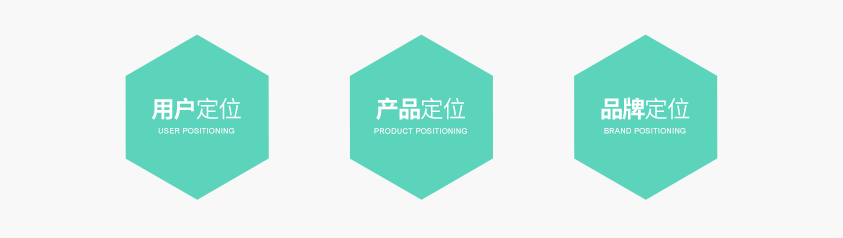
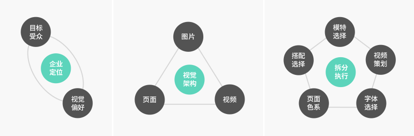

BRAND
传统企业电商品牌化
电商1.0的B2C时代，传统企业纷纷触电或利用天猫等平台或自建平台开展电商；但随着行业红利的消失、竞争的加剧，不少企业的电商遭遇增长变缓、有销量无利润等困境，而大部分线下（服装）企业2.0时代电商的面临的问题其实较为雷同的--定位不明确。
用户、产品、品牌
1）网购用户定位于传统消费者定位不同，传统的根据既有产品和品牌的目标定位于粗糙，互联网时代，需要用户的精细化定位，从而制定产品及品牌方面策略。
2）产品定位不精确，大部分企业对目前网购用户追逐的品牌、风格、价位等方面分析存在欠缺，单纯定义产品为欧美或日韩国语广泛，难以抓住用户兴奋点。
3） 品牌定位规划流于形式，对如何打造多品牌战略规划不足，如何根据战略规划的逐步推进，不同阶段的品牌定位将会产生调整及重新定位。

而绿浪会根据多年的从业经验和几年的客户兴衰情况去将企业的定位落地成视觉：
1 根据企业自身优劣定位去分析目标受众和视觉偏好；
2 根据视觉偏好去做大视觉的架构：页面、图片、视频；
3 拆分每一个板块去做执行：选模特、搭配、页面色系、字体、视频策划等
